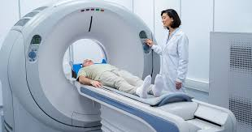

- Emergency Care
- This encompasses immediate treatment for urgent medical situations, often involving a dedicated emergency department (ED) or casualty department.
- Outpatient Services
- These are medical services that do not require an overnight hospital stay, such as routine checkups, consultations, and some procedures.
- Surgery
- This area involves various surgical procedures, ranging from minor to major, and may include both inpatient and outpatient surgeries.
- Radiology
- Also known as imaging services, this includes X-rays, CT scans, MRIs, and other diagnostic imaging techniques.
- Pharmacy
- This provides access to medications, often including both inpatient and outpatient prescriptions, and sometimes offering 24-hour service.


